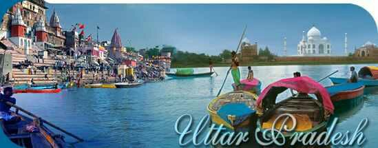
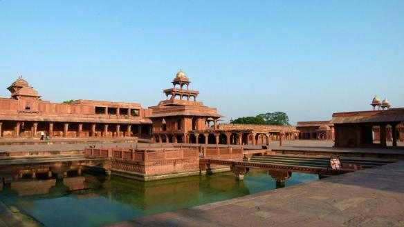
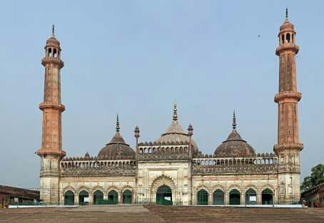
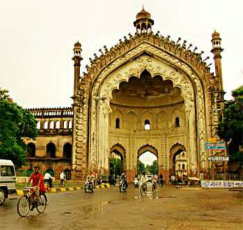
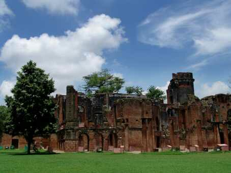

HAPPY JOURNEY .COM |
creating happy travellers
HAPPY JOURNEY .COM |
creating happy travellers
Utter Prodesh
| Introduction | |
|  |
Uttar Pradesh: Over 2000 years ago the area
which is now Uttar Pradesh was part of Ashoka's great Buddhist
Empire. It was also part of the Mughal Empire. Thereafter the Nawabs
of Avadh rose into prominence.Later, the British deposed the last
Nawab.They named it as the United Province. After Independence, it
was renamed as Uttar Pradesh.Area: 2,94,411 The Chikan is very famous in the world. Chikan is
hand - woven embroidered cloth. Silk saris known as Kimkhawb,
Chikan work from Lucknow, metal ware of Moradabad and
Aurangabad,woodcarving of Saharanpur etc. are very famous.
Durri(rag) weaving, marble items, etc are also very good.
|
|
|
Taj Mahal -"the epitome of love", "a monument of immeasurable beauty". The beauty of this magnificent monument is such that it is beyond the scope of words. Mughal Emperor Shah Jahan got this monument constructed in the memory of his beloved wife Mumtaz Mahal. |

Fatehpur Sikri,situated 50 kilometers off Agra, has another cluster of monuments. Buland Darwaza, the highest gateway in Asia. Salim Chisti mausoleum and Panch Mahal stand proudly in its premises |

Lucknow, the capital of Uttar Pradesh and erstwhile Oudh, has many monuments
worth appreciating. The most famous among the lot is Bada Imambada. This
shrine has a special relevance for the Shiite Muslims in India. The chandeliers and
other glassware that decorates the inner sanctum of this place are magnificent.
|  |
The Rumi Darwazathat guards the entrance of old Hussainabad in Lucknow is another monument of magnificence. |
|  | Among the buildings of British era the most notable one is the Church complex of Sardhana that was constructed by Begum Shamru who was married to a British colonel. Equally important is 'The Residency' in Lucknow that used to be the residence cum office of the Resident General of Oudh. |
|
Budget friendly Uttar Pradesh 6days|Uttar Pradesh starting@41,900/- |